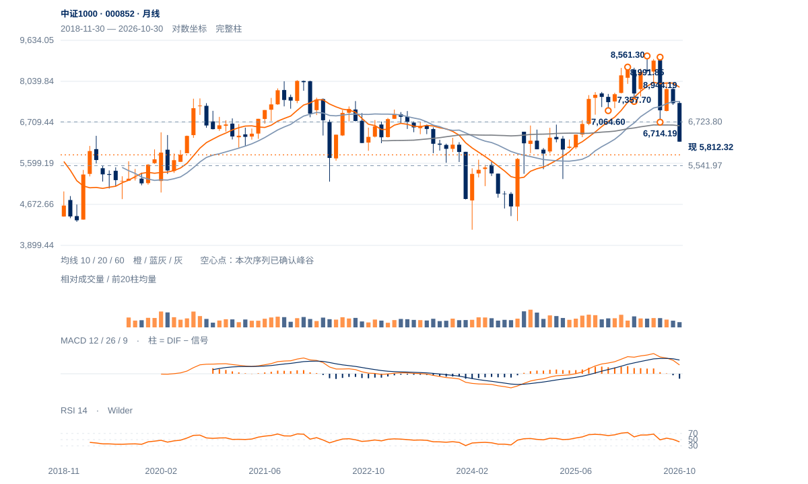

近期偏5542低区的弱势检验，不能仅据微小越界认定新一轮大幅扩展，也没有守位反转证据。
中证1000 · 2026-11-25完整收盘
跌4.44%却只破前低0.42点，是否已形成有效扩展？
5,541.55-4.44%
微幅新低与大幅日跌的区别
分期限展望
未来2—6周先观察5542低区是有效扩展还是迅速回收。0.42点微破不足以独立升级为新下行波，但6017—6137未回及6724较低高区仍支持下降重建；后续持续更低收盘才增加扩展依据。
未来1—3个月保持半年顶部后调整框架，6983测幅已兑现不再前推。当前结构须由新波谷和较低高点界定；6137恢复、周级低点抬高及上层供应消化分别完成后，才降低9月7852高区后的下降权重。

长期背景
5—7月双顶6983原测幅已完成，当前6585—6616旧承接仍为上方供应。2024升波61.8%回撤6017已失，完整20月均衡7351及9月7852较低高区均未恢复，5542小幅新低不能替代更大尺度判断。 当前日收盘5,541.55与完整10月月线分开观察；11月尚未结束。
中期结构与新证据
完整周线已更新至11月20日：2026-08-18高7,995.50（2026-09-04确认）；2026-09-11低7,284.53（2026-09-24确认）；2026-09-22高7,852.23（2026-10-09确认）。最新一周与上次11月20日背景分别保存；24日国内与23日美股仅为本周进行中观察。25日收5541.55恰为日低，较23日5541.97仅低0.42点，远小于ATR213.77。5817.84日高没有恢复6017—6137；相对量0.87倍，6723.80较低高点和9月7852下降背景仍在。6983旧双顶测幅早已兑现。
确认与失效
先回5818附近并有价格进展，再恢复6017—6137；6724是更高一级。
后续低点和收盘继续下移才强化5542破坏；旧测幅不重复列未来目标。
主要反方
缩量和极小破低允许快速回收；若收回并推动至6017—6137，当前下降中的反弹解释需下调。
波动与量能
RSI14 27.95；ATR14 213.77；相对量0.87倍